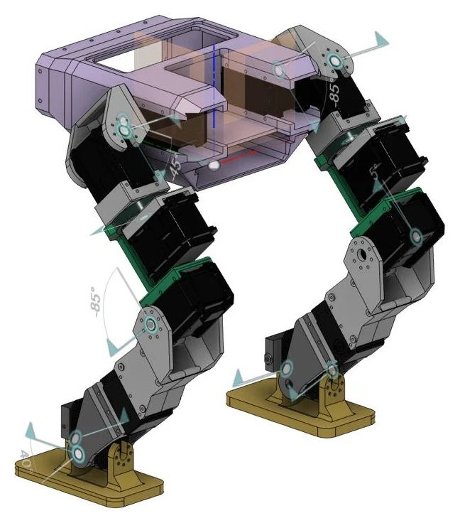

Legged robotics · Project INMR2632
Intelligent Biped Robot: From CAD to Learned Walking
Azhar Saputra · Abderraouf Maoudj · Brahim Brahmi
A modular biped platform connects mechanical design with learned locomotion. Joint axes and limits are defined in CAD and carried into Isaac Lab, linking the robot’s mechanism, neural policy, gait timing, safety checks and servo-level control in one development pipeline.
The video presents the CAD-to-training pipeline in Isaac Lab. Prototype fabrication is underway; transferring the policy to the printed robot and measuring hardware performance are the next stage.
Research focus
- Design for reproducible research: A CAD-defined mechanism, explicit joint limits and low-cost 3D-printed parts support an accessible platform for balance, whole-body control and robot learning.
- Learn progressively harder locomotion: The training curriculum begins on flat ground and extends to rough terrain, slopes and stairs. A neural policy sets joint targets while gait timing, limit checks and PD servo control structure execution.
- Connect learning to hardware: The planned hardware evaluation will measure falls, push recovery and walking speed on the printed platform, connecting policy development with physical robot performance.
Project overview
